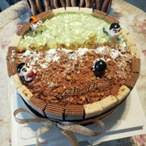

<!--
  Generated template for the CooklistPage page.

  See http://ionicframework.com/docs/components/#navigation for more info on
  Ionic pages and navigation.
-->
<ion-header>
  <ion-grid>
    <ion-row>
      <ion-col col-4 (click)="back()">
        <ion-icon name="arrow-back" ></ion-icon>
      </ion-col>
      <ion-col col-4 style="text-align: center"><ion-note>家常菜谱</ion-note></ion-col>
      <ion-col col-4 style="text-align: right"(click)="toSearch()">
        <ion-icon name="search"></ion-icon>
      </ion-col>
    </ion-row>
  </ion-grid>


</ion-header>


<ion-content >
  <div padding>
    <ion-segment [(ngModel)]="cooklistModel">
      <ion-segment-button *ngFor="let item of list01" value="{{item.val}}">
        {{item.list01}}
      </ion-segment-button>
    </ion-segment>
  </div>

  <div [ngSwitch]="cooklistModel">
    <ion-list *ngSwitchCase="'01'" no-lines >
      <ion-item>
        <ion-thumbnail item-start >
          
        </ion-thumbnail>
        <h2>小新游泳蛋糕</h2>
        <p>大菠萝</p>
        <p>原料：</p>
      </ion-item>
    </ion-list>

    <ion-list *ngSwitchCase="'02'" no-lines>
      <ion-item>
        <ion-thumbnail item-start >
          
        </ion-thumbnail>
        <h2>小新游泳蛋糕</h2>
        <p>大菠萝</p>
        <p>原料：</p>
      </ion-item>
    </ion-list>
  </div>
</ion-content>
